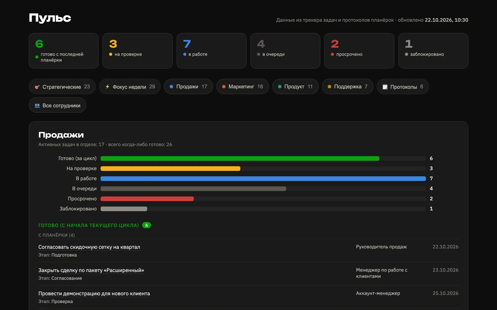
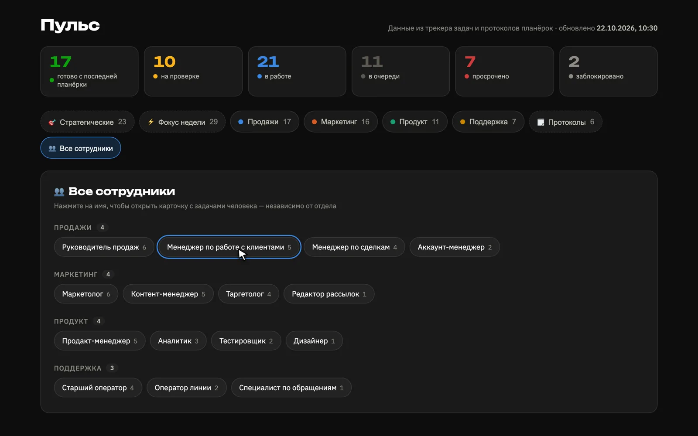
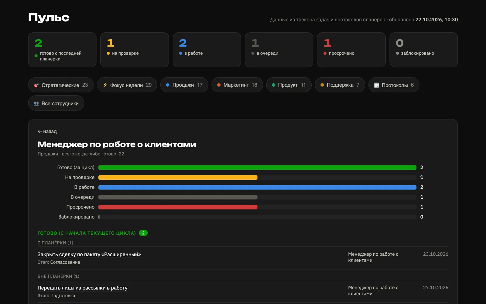
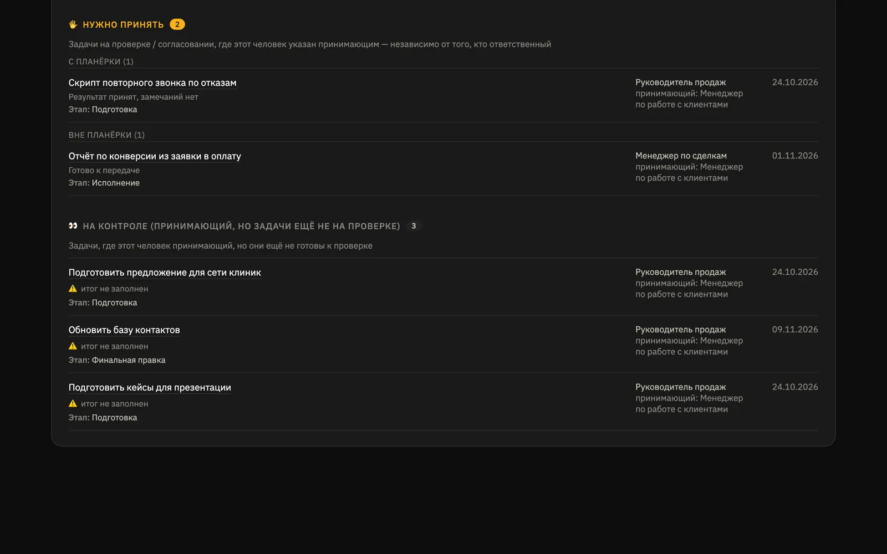
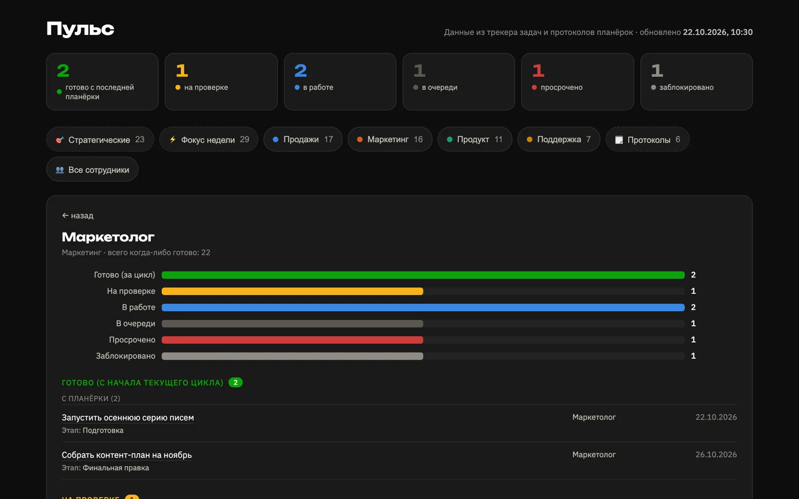
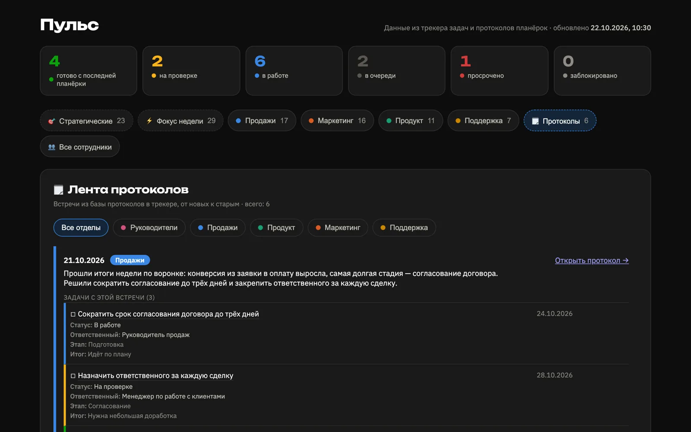

оценка
Около 5 минут вместо 1,5–2 часов
Столько уходит у руководителя на обход задач команды после дашборда и новой структуры задач
Функции проджект-менеджера
С апреля 2024 — бизнес-ассистент, с февраля 2026 — ПМ-ассистент в онлайн-школе Diva: пять отделов, 60+ сотрудников
Почему я
Цифры из моей работы в онлайн-школе Diva и на прошлых проектах; где это моя оценка, так и написано
Веду задачи и планёрки: продукт, маркетинг, контент, продажи, технический отдел
Каждую провожу, записываю протокол и раздаю задачи по итогам
Столько уходит у руководителя на обход задач команды после дашборда и новой структуры задач
Собрала сама для команды, среди них агент для протоколов встреч и дашборд задач
Разобрала при чистке прав на Google Диске и убрала доступы ушедших сотрудников
Так вела дела одного собственника как бизнес-ассистент с апреля 2024 по февраль 2026, теперь 5 отделов и 60+ человек
Услуги и условия
Одна месячная ставка за постоянную работу:
Работаю в постоянном формате, разовые проекты пока не беру
Ежедневно слежу за статусами, дедлайнами и просрочками у руководителей и команды
Провожу встречи отделов, записываю протоколы и раздаю задачи по итогам
Пишу правила взаимодействия отделов, маршрутные листы и видеоинструкции для новых сотрудников
Нахожу, где ломается взаимодействие отделов, и предлагаю, как это исправить
Чищу права к сервисам и убираю доступы ушедших сотрудников
Собираю сама: протоколы встреч, дашборд задач, боты для HR
Что сделано
Конкретные дела из моей работы; имена коллег и внутренние названия продуктов не указываю






Правила общения между отделами, проведения планёрок и проверки задач, составления ТЗ и ведения задач в рабочем сервисе
Для новых руководителей и сотрудников, со структурой и видеоинструкциями, и отдельный лист при увольнении
Переход команды на отчёты «фокус, процессные, ежедневные»
Замена политики конфиденциальности и уведомлений о cookies на всех собранных лендингах, чек-лист и таблица проверки документов
Регламент, отчёты и сверка трек-номеров с доставкой
Обновление всех материалов по всем курсам и продуктам школы
Сбор внутренних вопросов отделов, взаимодействие с интеграторами, созвоны по настройке
Перевод отдела креаторов на партнёрскую программу: разобралась в условиях, работала с юристом, вместе подготовили дополнительные соглашения и оферту
Обо мне
Яна · ПМ-ассистент в онлайн-школе Diva
Я начинала координатором мероприятий и в отделе продаж ассоциации загородных отелей: с 2023 года организовывала форумы на 150–250 человек и работала с B2B-клиентами.
Потом ушла в бизнес-ассистирование: с апреля 2024 года вела дела на разных проектах.
Затем поняла, что хочу развиваться в проектном управлении, и пришла ПМ-ассистентом в онлайн-школу: здесь я контролирую разные отделы и расту как специалист.
Мне нравятся контроль, систематизация и структура. Когда между отделами всплывает проблема, мне интересно докопаться до сути и найти решение: наладить, оптимизировать, автоматизировать, чтобы всё работало как часики.
Каждый день слежу за задачами и сроками, пока они не закрыты
Сама собираю ИИ-агентов, ботов и дашборды
Позитивно выстраиваю общение с командой и руководителями
Ищу причину проблемы во взаимодействии, а не только исправляю последствия
Контакты
Основной способ связи — Телеграм
Напишите, что нужно, и обсудим, подойду ли я